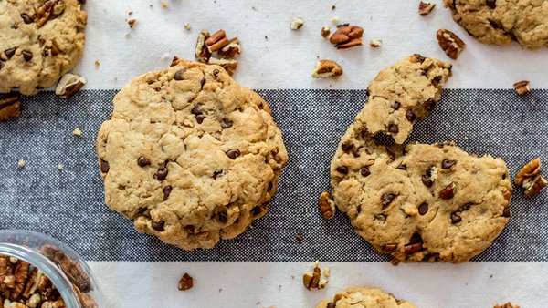

Recette de cookie
Recette pour 6 personne !

Ingrédients:
- 1 Oeuf
- 85 kg de sucre
- 85 kg de beurre
- 150 g de farine
- 100 de pépite de chocolat
- 1 sachet de sucre vanillé
- 1 cuillère a café de levure chimique
- 1/2 cuillère a café de sel
Préparation :
- Laisser ramolire le beurre à température ambiante. Dans un saladier, malaxez-le avec le sucre
- Ajoutez l'oeuf et éventuellement le sucre vanillé.
- Versez progressivement la farine, la levure chimique, le sel et les pépites de chocolat. Mélangez bien.
- Beurrez une plaque allant au four ou recouvrez-la d'une plaque de silicine. A l'aire de deux cuillère à soupe ou simplement avec les mains, formez des noix de pâte en les espaçant car elles s'étaleront à la cuisson.
- Faites cuire 8 à 10 minutes à 180°C soit thermostat 6. Il faut les sortir dès que le contours commencent à brunir.